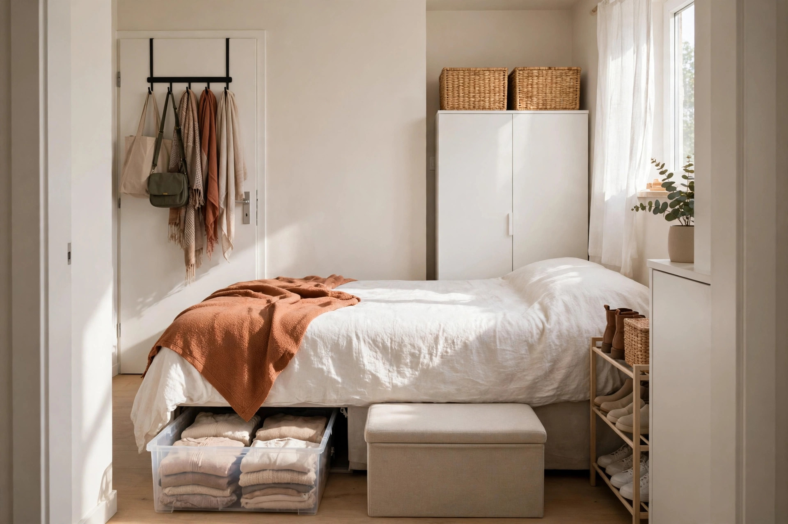

Small Bedroom
Small Bedroom Storage Ideas Under $100
Intro
In a small bedroom, the problem usually is not a lack of space — it is that nothing has a set place. Clothes, shoes, books, chargers, extra bedding — everything has to fit into one small room, without making the room feel like a store room.
This guide has 15 storage ideas, and the whole plan stays under $100. Each idea comes with a rough price, so you can pick 3–4 ideas today to suit your budget. Most ideas are renter-friendly — no drilling, no permanent change.

1. Flat boxes under the bed — $15–$25
The space under the bed is the biggest wasted space of all. Put off-season clothes, extra bedding or shoes in flat, clear boxes. Add labels so they are easy to find. A bed skirt will hide the boxes.

2. A storage ottoman at the foot of the bed — $25–$35
This one thing does three jobs: a place to sit, a place to store a blanket, and a finished look for the room. Keep in it only the things you need every day — an extra throw, a book, a charger.
3. An over-the-door rack behind the door — $10–$15
Hang a rack behind the bathroom or bedroom door. Hang bags, scarves, belts, or tomorrow's clothes on it. That space is empty anyway, and it takes the load off the wardrobe.
4. A hanging shelf in the wardrobe — $8–$12
Use a hanging fabric shelf to divide one wardrobe shelf into 2–3 sections. Keep T-shirts, jeans or folded clothes in separate compartments. That almost doubles the capacity of one shelf.
5. A slim shoe rack beside the bed — $12–$18
Instead of a big shoe cabinet, get a slim, 2-tier rack that sits flat against the wall. Keep only the 3–4 pairs you wear every day outside; put the rest in the boxes under the bed.
6. A floating shelf instead of a bedside table — $10–$15
One small floating shelf + one small basket is enough for a phone, a book and a bottle of water. With no table on the floor, the room looks open and cleaning is easier too. If you rent, try a shelf with adhesive hooks.
7. Vacuum bags for seasonal clothes — $8–$12
Put heavy winter jackets or extra blankets in vacuum bags and store them under the bed or on top of the wardrobe. They take up half the space, and the clothes stay protected from dust too.
8. A pegboard or hook strip — $10–$15
Hang a small pegboard or 5-hook strip near the bed or on the side of the wardrobe. For hats, bags, jewellery or tomorrow's outfit. When everything is visible, getting ready in the morning is quicker.
9. Under-bed rolling drawer, DIY — $0–$10
Take an old shallow box or an old drawer and fix 4 small wheels underneath. Now it is a rolling drawer — keep shoes, books or craft supplies in it. This is the cheapest and most useful DIY of all.
10. Use the top of the wardrobe — $5–$10 (boxes)
Put matching boxes or baskets on top of the wardrobe. Store the things you use least there — a travel bag, extra sheets, gift wrap. Matching boxes look organised, not cluttered.
11. Inside the nightstand: "one in, one out"
This costs nothing, it is a habit. Keep only 5 things in the nightstand drawer. When something new goes in, something old comes out. In a small space, this rule makes the biggest difference.
12. A narrow shelf behind the bed — $12–$20
If there is 10–15 cm of space between the bed and the wall, a narrow shelf or a slim bookcase fits there. Books, a phone charger and a small lamp — everything within reach, with nothing on the floor.
13. A laundry basket that looks like furniture — $12–$18
Instead of a plastic laundry basket, get a lidded basket that looks like a side table. Dirty clothes stay hidden, and the room looks clean too. Put a small plant on the lid and it becomes decor as well.
14. A tray + hooks for jewellery and small things — $5–$10
Put a small tray on the dresser — rings, watch, keys, all in one place. Hang necklaces from 2–3 small hooks on the wall. When small things are scattered around, the whole room looks messy, however tidy the bed is.
15. A weekly 10-minute reset
Every Sunday, just 10 minutes: check under the bed, fill one basket and put things back in their places, and take out one thing you have not used in the past month. A storage system only works if you maintain it.
Conclusion — What to get for $100?
If you only want to spend $100, get this starter kit:
- Flat under-bed boxes: ~$20
- Over-the-door rack: ~$12
- Hanging wardrobe shelf: ~$10
- Storage ottoman: ~$30
- Vacuum bags + baskets: ~$15
- Total: ~$87 — and you will have $13 left over.

Plus the free habits — one in, one out, and the weekly reset — will keep the room organised for a long time.
Pinterest pin titles (3 fresh pins, same article, different designs)
- "Small Bedroom Storage Ideas Under $100 — 15 Smart Hacks"
- "Small Bedroom? These 3 Things Go Under the Bed"
- "$87 Bedroom Storage Kit — Small Room, Big Space"